Professional Activities
- Area Chair
- CVPR (2026, 2027), ICLR (2027), NeurIPS (2024–2026), ICML (2025)
- Program Committee
- ICCP (2023–2026)
- Reviewer
- CVPR, ICCV, ECCV, BMVC, ICLR, NeurIPS, SIGGRAPH, SIGGRAPH Asia, TIP, TCI
Research
-
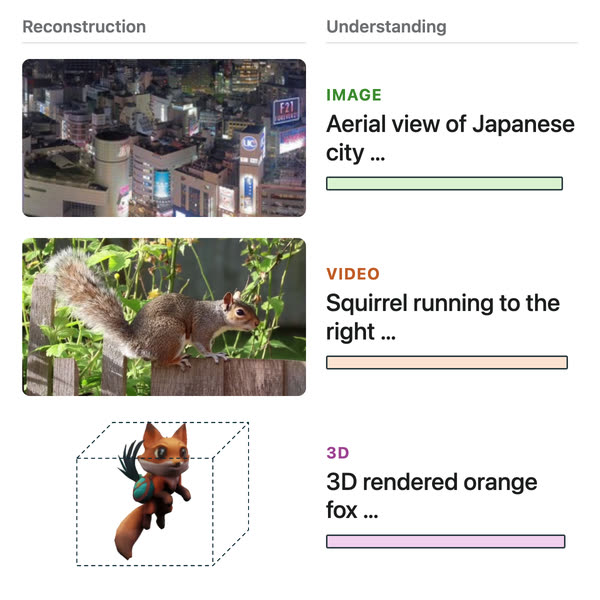
AToken: A Unified Tokenizer for Vision
IEEE/CVF Conference on Computer Vision and Pattern Recognition (CVPR), 2026 (Oral)
project page · arXiv · code
A unified visual tokenizer for high-fidelity reconstruction and semantic understanding across images, videos, and 3D assets.
-
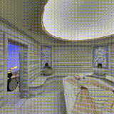
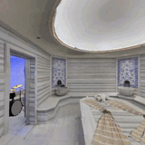
Novel-view Acoustic Synthesis from 3D Reconstructed Rooms
Interspeech, 2024
project page · arXiv · video · code · headset recommended
Estimating spatial sound in reconstructed scenes by combining blind audio recordings with 3D information.
-
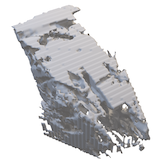
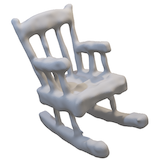
Neural Kaleidoscopic Space Sculpting
IEEE/CVF Conference on Computer Vision and Pattern Recognition (CVPR), 2023
project page · paper · video · code · bibtex
Full-surround 3D reconstructions from a single kaleidoscopic image via neural surface sculpting.
-
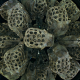
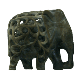
Kaleidoscopic Structured Light
ACM Transactions on Graphics (Proc. SIGGRAPH Asia), 2021
project page · paper · video · code · bibtex
Structured light with hundreds of virtual projectors and cameras for full-surround scanning.
-
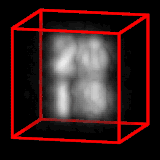
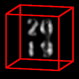
Convolutional Approximations to the General Non-Line-of-Sight Imaging Operator
IEEE/CVF International Conference on Computer Vision (ICCV), 2019 (Oral)
project page · paper · video · code · bibtex
A convolutional perspective of the NLOS operator enabling efficient reconstruction.
-
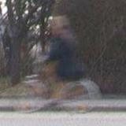
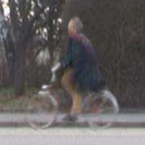
Occlusion-Aware Video Deblurring with a New Layered Blur Model
Tech report, 2016
Layered blur model handling occlusions for video deblurring.
-
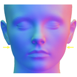
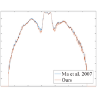
Reduced Illumination Patterns for Acquisition of Specular and Diffuse Normal Maps
ACM SIGGRAPH Asia Posters, 2016
Polarization-based normal map acquisition with fewer patterns.
-
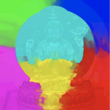
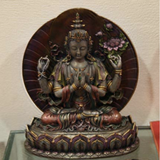
Dynamic Scene Deblurring
IEEE International Conference on Computer Vision (ICCV), 2013
Joint estimation of latent image, motion, and soft segmentation for dynamic scenes.